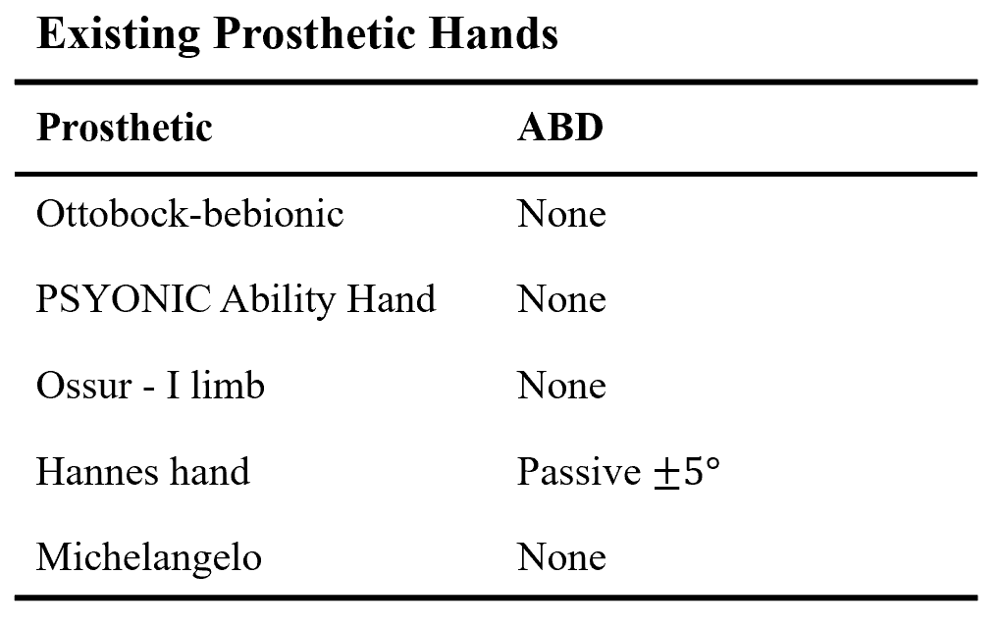
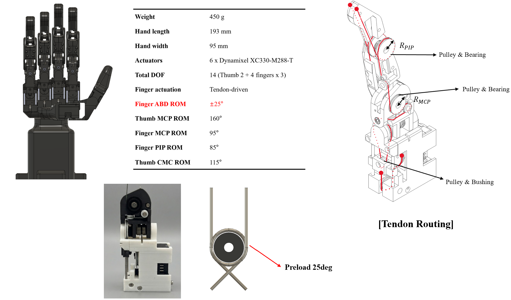
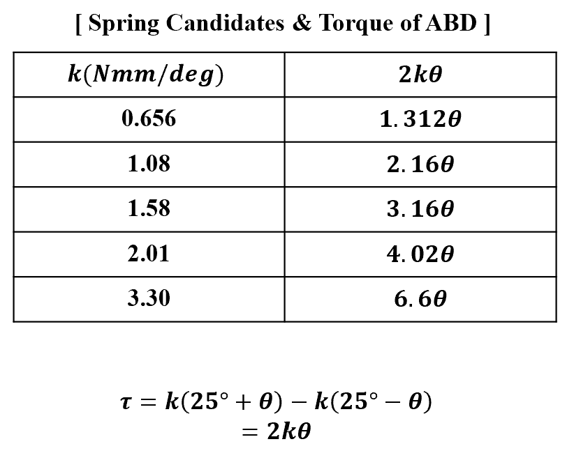
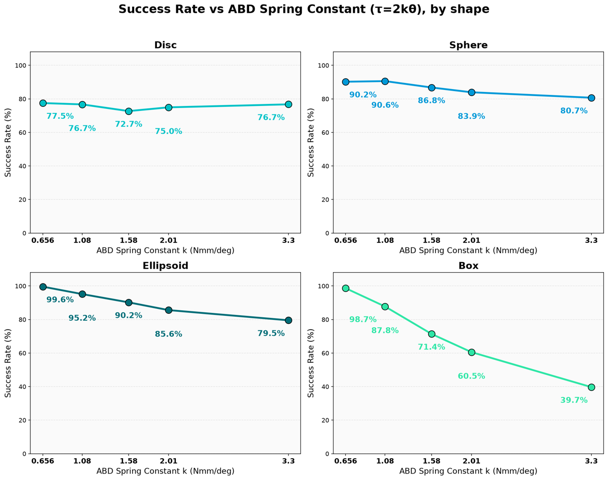
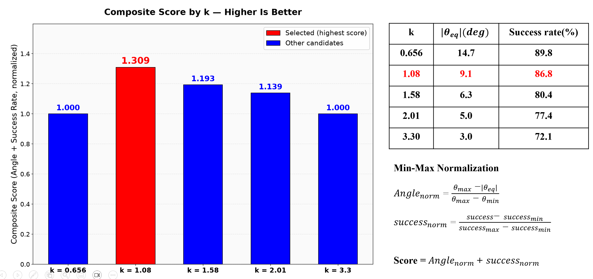
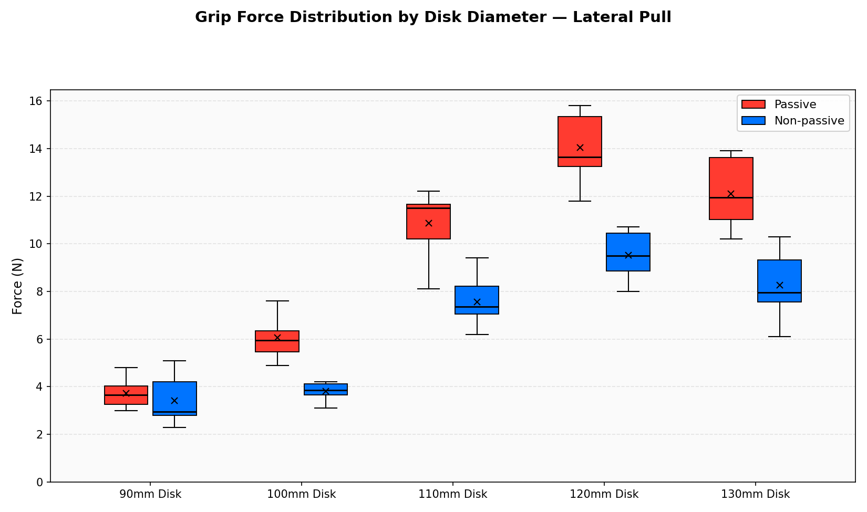
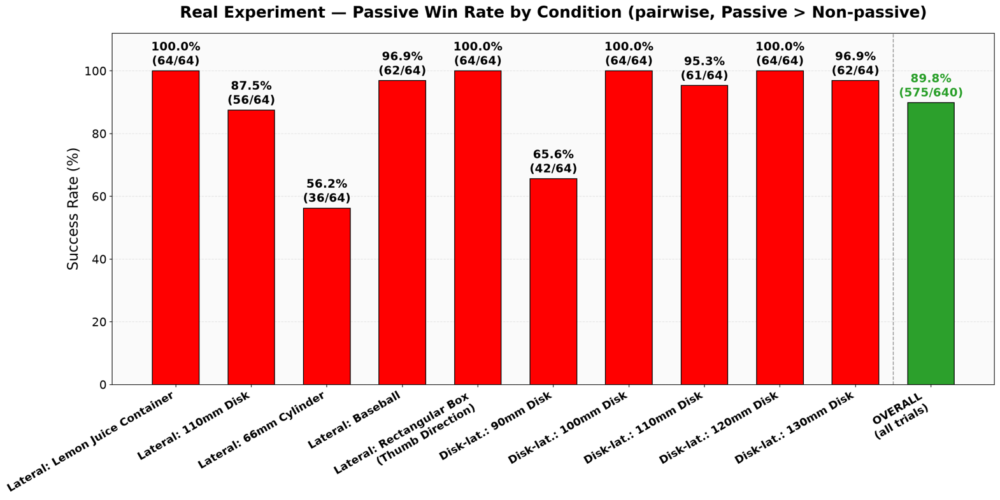

Design of a passive abduction mechanism using dual torsion springs and dual tendon routing, and evaluation of grasp stability · Undergraduate Researcher, BioRobotics Laboratory (BRL), SNU
Commercially available prosthetic hands almost never provide an abduction/adduction (ABD) degree of freedom — their four fingers move only in flexion and extension, so the MCP joints are effectively 1-DOF. Prior human-hand studies report that unrestricted ABD improves grasp size, grasp force and overall stability, which suggests the missing DOF costs real grasping performance.
Adding a dedicated actuator per finger to control ABD directly was not an option — the extra motors, wiring and weight are a hard constraint prosthetic hands can't afford. So instead I made the ABD degree of freedom fully passive: two opposing torsion springs return each finger to a neutral abduction angle while still letting it splay out to conform to an object, adding compliance with zero additional actuation.

The hand has four tendon-driven fingers and a fully actuated 2-DOF thumb. Each finger carries a 2-DOF MCP joint (tendon-driven flexion/extension with a torsion-spring return, plus the passive ABD axis) and a 1-DOF PIP joint. A dual-tendon routing scheme with a constant moment arm drives flexion, while the springs handle extension and recentering. At the same time, since a prosthetic hand must not let its fingers go loose under gravity or external loads, it is critical to understand the relationship between spring stiffness and ABD angle, and to select a spring that sits between adaptability and practical usability.

The one free parameter in a passive mechanism is the spring stiffness. Too soft and the joint feels loose; too stiff and it stops conforming to the object at all. Because the two springs oppose each other at a 25° preload, the restoration torque is τ = 2kθ accordining to the simple equation below the table. The table on the right lists the commercially available spring candidates.
I swept the restoration torque in a MuJoCo simulation across four object families — disc, sphere, box and ellipsoid — with multiple sizes, masses and approach positions per torque level (576 grasp runs per stiffness value). The resulting win rate against a non-passive baseline traded off directly against joint tightness.


While there are differences between individual objects, the overall trend clearly slopes downward to the right. Also the selected operating point was k = 1.08 Nmm/deg — It sits at the knee of the trade-off curve: using Min-Max normalization, the case (k = 1.08 Nmm/deg) recorded the highest score(theta = 9.1 deg, success rate = 86.8%), so I chose it for real environment experiments.

To make that trade-off precise, define score = 𝐴𝑛𝑔𝑙𝑒_𝑛𝑜𝑟𝑚 + 𝑠𝑢𝑐𝑐𝑒𝑠𝑠_𝑛𝑜𝑟𝑚 for each stiffness k candidates — 𝐴𝑛𝑔𝑙𝑒_𝑛𝑜𝑟𝑚 = (𝜃_𝑚𝑎𝑥 − |𝜃_𝑒𝑞 |)/(𝜃_𝑚𝑎𝑥 − 𝜃_𝑚𝑖𝑛 ), 𝑠𝑢𝑐𝑐𝑒𝑠𝑠_𝑛𝑜𝑟𝑚 = (𝑠𝑢𝑐𝑐𝑒𝑠𝑠− 𝑠𝑢𝑐𝑐𝑒𝑠𝑠_𝑚𝑖𝑛)/(𝑠𝑢𝑐𝑐𝑒𝑠𝑠_𝑚𝑎𝑥 − 𝑠𝑢𝑐𝑐𝑒𝑠𝑠_𝑚𝑖𝑛 ) The stiffness k (1.08) scores highest, and every other k scores lower. So k=1.08 Nmm/deg is the single best trade in the entire sweep.
Simulation at the selected stiffness (k = 1.08 Nmm/deg) predicted an 86.8% success rate. Building the hand and testing it in the real world produced an 89.8% win rate — within 3 percentage points of the simulated prediction, confirming that the simulation-driven stiffness selection carries over to physical hardware.

The proposed hand was tested against a non-passive configuration on physical objects — discs of five diameters, a baseball, a cylinder, a taped roll, a rectangular box and a juice container — measuring the pull-out force at which each object slipped from the grasp. Each condition ran 8 passive and 8 non-passive trials, cross-compared pairwise.

Across every object tested, the passive-ABD hand held on where the fixed-joint baseline slipped — confirming that a fully passive degree of freedom, with no added actuation, is enough to meaningfully improve grasp stability.